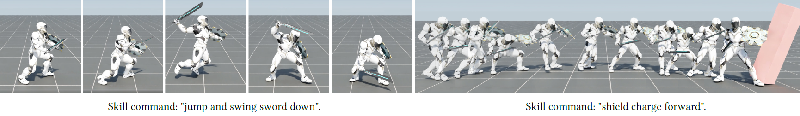

Jordan Juravsky (1, 4)Yunrong Guo (1)Sanja Fidler (1, 2, 3)Xue Bin Peng (1, 5)
(1) NVIDIA(2) University of Toronto (3) Vector Institute (4) University of Waterloo (4) Simon Fraser University

Abstract
Developing systems that can synthesize natural and life-like
motions for simulated characters has long been a focus for
computer animation. But in order for these systems to be
useful for downstream applications, they need not only
produce high-quality motions, but must also provide an
accessible and versatile interface through which users can
direct a character's behaviors. Natural language provides a
simple-to-use and expressive medium for specifying a user's
intent. Recent breakthroughs in natural language processing
(NLP) have demonstrated effective use of language-based
interfaces for applications such as image generation and
program synthesis. In this work, we present PADL, which
leverages recent innovations in NLP in order to take steps
towards developing language-directed controllers for
physics-based character animation. PADL allows users to
issue natural language commands for specifying both
high-level tasks and low-level skills that a character
should perform. We present an adversarial imitation
learning approach for training policies to map high-level
language commands to low-level controls that enable a
character to perform the desired task and skill specified
by a user's commands. Furthermore, we propose a multi-task
aggregation method that leverages a language-based
multiple-choice question-answering approach to determine
high-level task objectives from language commands. We show
that our framework can be applied to effectively direct a
simulated humanoid character to perform a diverse array
of complex motor skills.